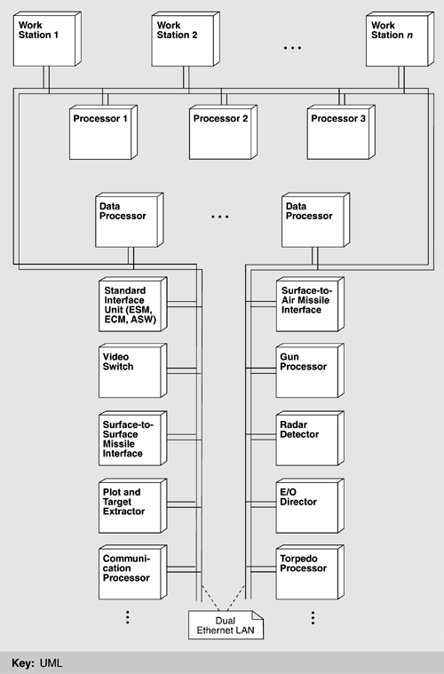

| [ Team LiB ] |
|
15.2 Requirements and QualitiesFor new products to be derived from an organizational repository, they must be structured so that they can share modules. As we discussed in Chapter 14, this means that there must be a standard set of modules, with agreements about individual module's responsibility, behavior, performance, interface, locality of function, communication and coordination mechanisms, and other properties. This familywide structure, the modules it comprises, and the properties about each that are constant across all members of the product line constitute the product line architecture. As we have seen throughout this book, the primary purpose of an architecture is to acheive a system that meets its behavioral and quality requirements. The architecture for each SS2000 product line member was no exception. The most important of these requirements were:
Besides these single-system requirements, the SS2000 architecture carried the additional burden of application to an entire class of systems. Thus its requirements included the ability to replace one module with another tailored to a particular system without disrupting the rest of the architecture. OPERATING ENVIRONMENT AND PHYSICAL ARCHITECTUREThe requirements of modern shipboard systems influence design solutions in profound ways. Sensors and weapons systems are deployed all over the ship; crew members interact with them via a multitude of separately housed workstations. The HCI must be highly tuned to facilitate rapid information flow and command acceptance and must be tailored to the operational mission of the vessel and the cultural idiosyncrasies of its crew. The likelihood of component failure dictates a fault-tolerant design. Figure 15.12 is a physical view of a typical system. A redundant LAN is the communications backbone, connecting from 30 to 70 different, cooperating processors. Nodes on the LAN can total around 30. A node is the end of a communication run and may correspond to a crew station, a weapons platform, or a sensor suite, all located in various parts of the ship and widely dispersed. It may host up to six processors. The LAN is a dual Ethernet. Device-interface modules send and receive data to and from the system's peripherals, primarily sensors, and the weapons systems being controlled. Figure 15.12. Typical physical architecture of an SS2000 product |
| [ Team LiB ] |
|